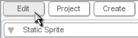

Naming Objects
To change or set an object's name from the Level Builder, select the object.|
Now, go to the Edit Tab (as
shown in Figure
1.1.1).
|
 Figure 1.1.1 |
| Next, open the Scripting Section and type a name into the Name field (I called this object 'pTank') (as shown in Figure 1.1.2). |
Figure 1.1.2 |
function up()
{
pTank.setLinearVelocity(0,-10);
}